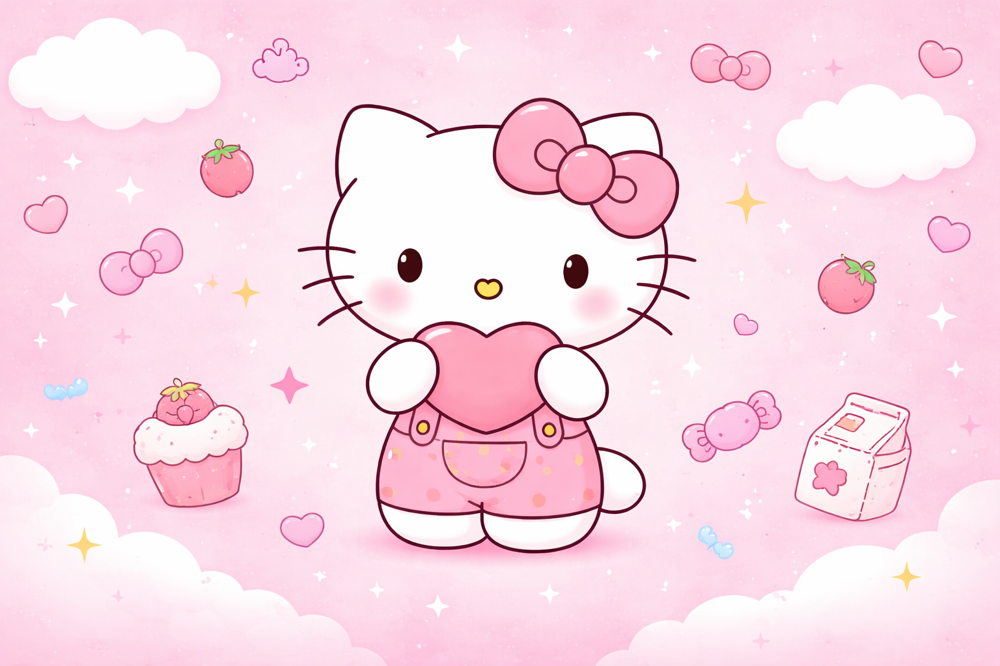

Historia da hello kitty
Talvez você conheça a Hello Kitty como uma das personagens mais famosas do mundo. Mas você sabia que ela tem uma história cheia de curiosidades e mistérios? Vamos conhecer a origem dessa gatinha mundialmente amada!
A CRIAÇÃO DA PERSONAGEM
A Hello Kitty foi criada em 1974 pela empresa japonesa Sanrio. A designer responsável foi Yuko Shimizu, que recebeu a missão de criar um personagem fofo, simples e que agradasse crianças e adultos. A inspiração veio do estilo kawaii, que valoriza traços simples, carisma e doçura. A personagem deveria transmitir amizade, alegria e leveza. Sugestão de imagem aqui: foto da criadora da Hello Kitty.
A primeira aparição
- Ela oficialmente não é uma gata, mas uma garotinha inglesa.
- Seu nome completo é Kitty White.
- Ela mora nos arredores de Londres.
- Ela tem uma irmã gêmea chamada Mimmy.
- Seu aniversário é em 1º de novembro.

Quer aprender mais?
A Hello Kitty já esteve em séries animadas, filmes, quadrinhos e milhares de produtos. Você pode assistir esse vídeo para aprender mais:
Então é isso! Espero que você tenha gostado de conhecer mais sobre a história da Hello Kitty e seu universo encantador.